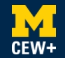

CEW+ at UM
WELCOME TO Center for the Education of Women + (CEW+)
CEW+ empowers women+ and underserved individuals in the University of Michigan and surrounding communities by serving as an advocate and providing resources to help individuals reach their academic, financial, and professional potential.
What We Do
At CEW+, we navigate circumstantial barriers by providing academic, financial, and professional support to help you reach your personal potential. Established to support women through higher education, we lift up women and all underserved communities at U-M and beyond. Through career and education counseling, funding, workshops, events, and a diverse, welcoming community, we exist to empower. We are CEW+, and we are here to help you reach your potential.
Events & Workshops
CEW+ offers a wide variety of events and workshops throughout the year that are designed to support personal and professional development. These events cover topics such as career advancement, leadership development, financial literacy, and personal well-being.
Funding Opportunities
CEW+ provides funding in the form of scholarships, fellowships, and emergency grants to support individuals who face financial challenges while pursuing their academic and professional goals.
CEW+ FundingsCounseling & Advocacy
CEW+ offers confidential counseling and advocacy services to help students, faculty, and staff navigate personal and professional challenges. The center provides support on issues such as career planning, financial management, and work-life balance.
To schedule a counseling appointment, please visit our Counseling Services Page.
Our Mission
To ensure members of the University of Michigan community—whether on a tight budget or physically restrained from getting to a grocery store—receive equitable access to healthy, nutritious, and nourishing food and the ability to prepare it for themselves or others.